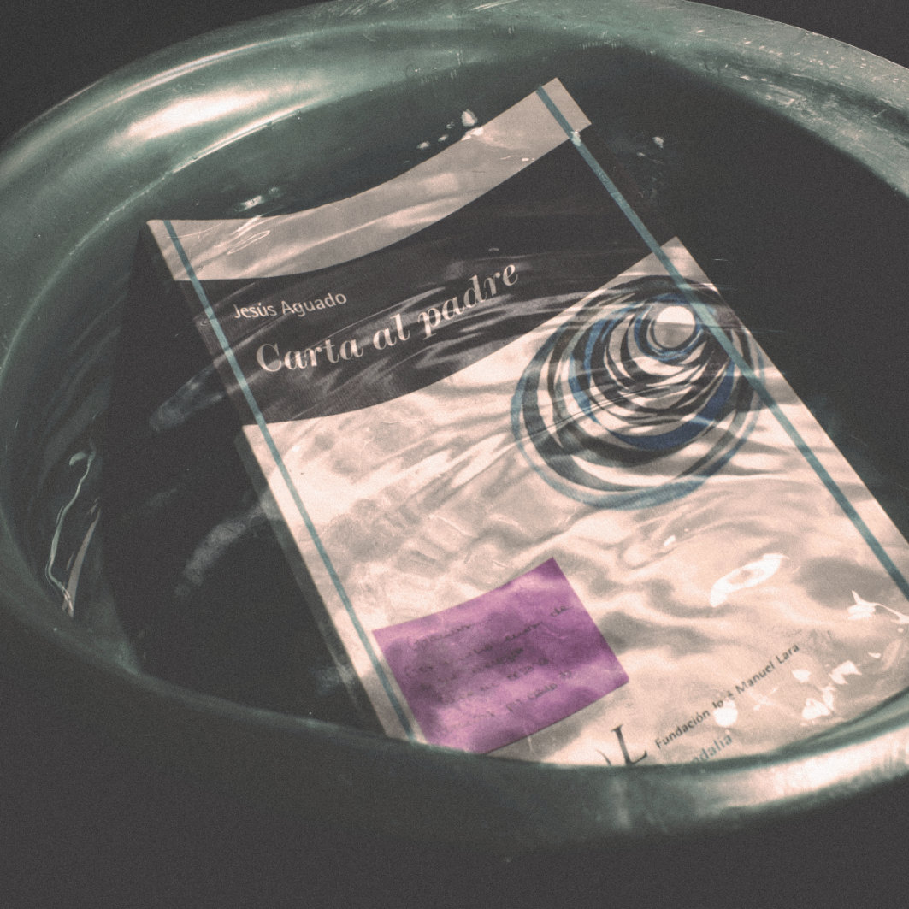
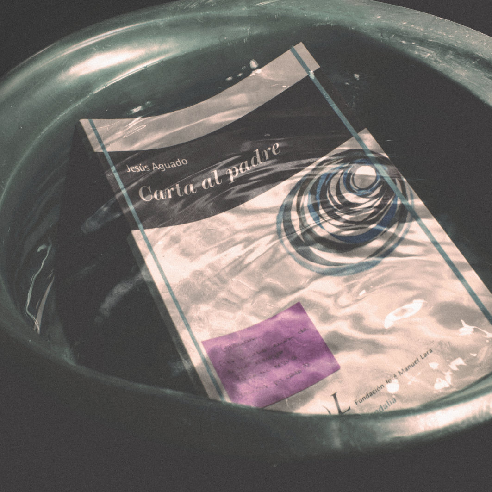
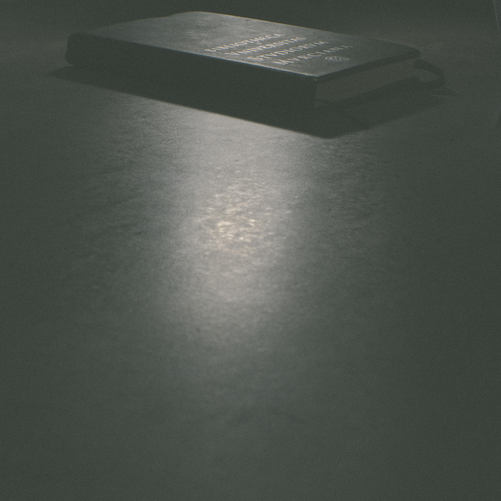
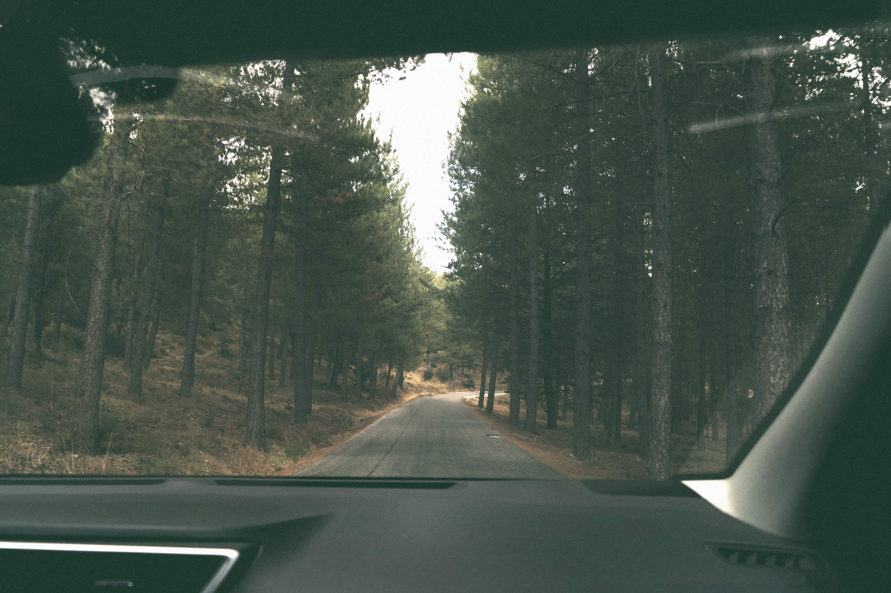
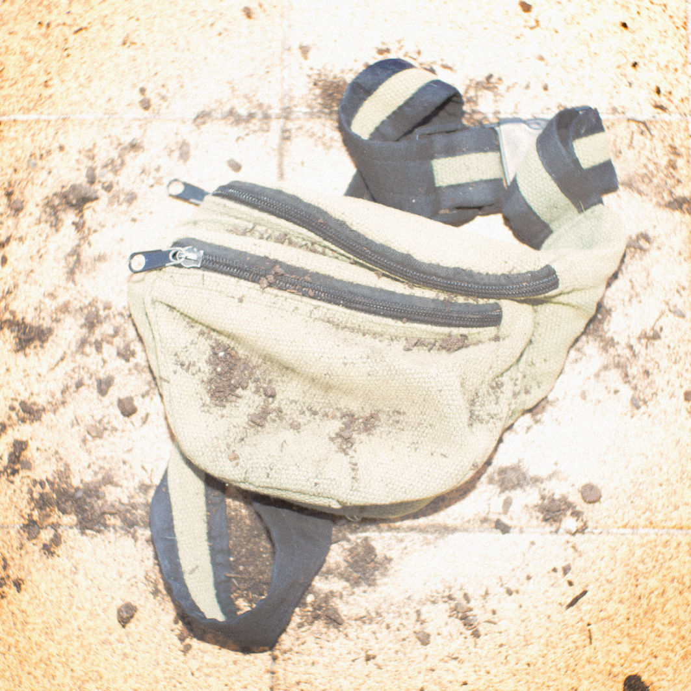
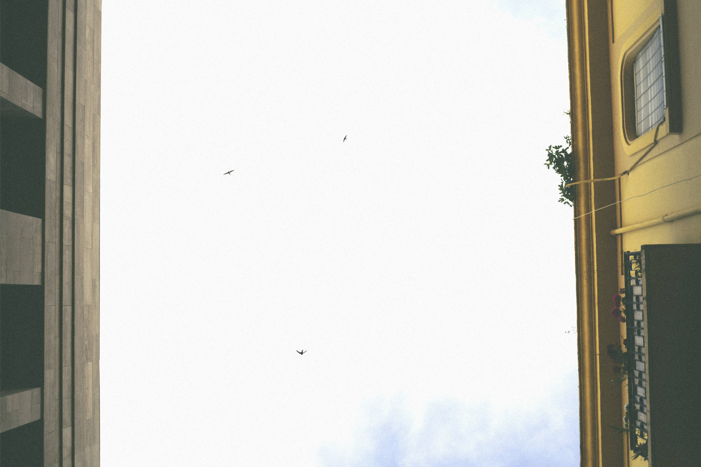
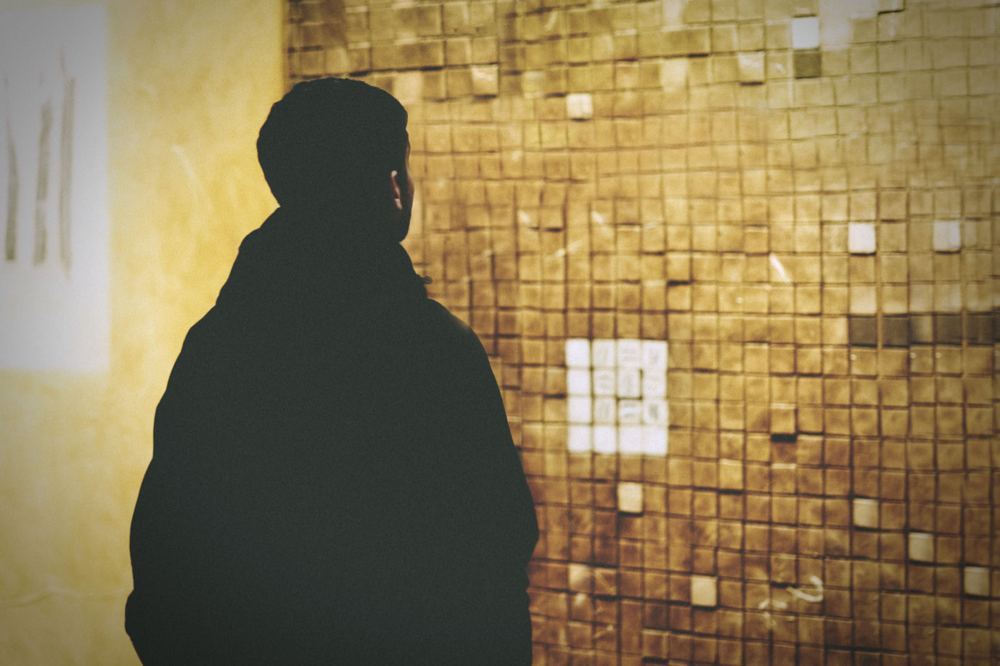
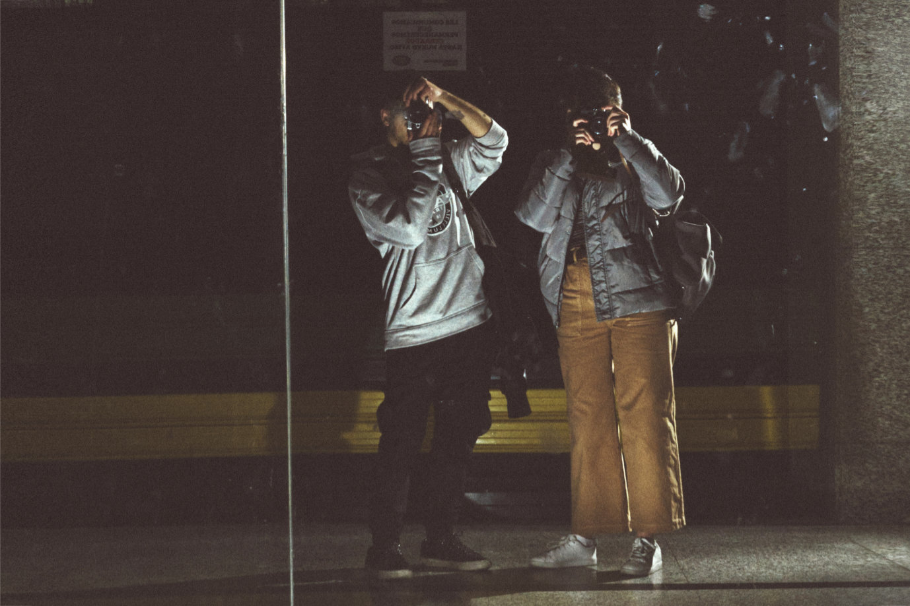

De sombras y recuerdos.
La luz
que desprendes.
 



Viajar.
De la luna
al pantano.


Caer desde el balcón.
Perdón teatro.

Córdoba, arte y ...
Una Noche Normal.

Más que una fotografía,
o no.
De una película,
sueño.